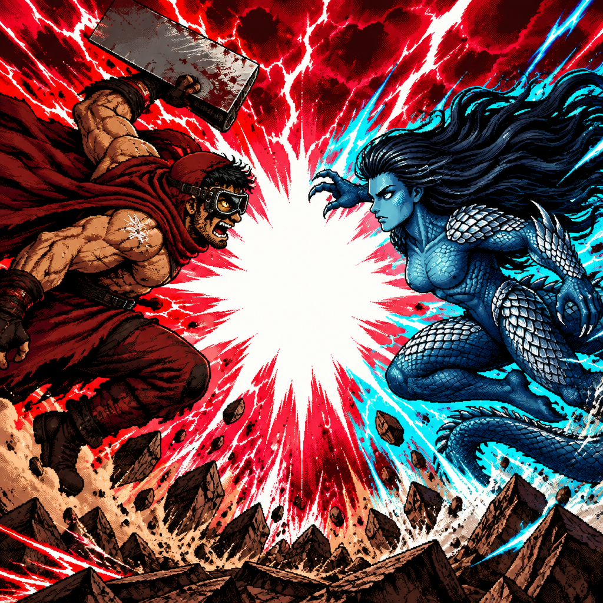

Killer Clicker: Community HQ
Feedback. Secrets. Roadmap. Rewards. Welcome to the community side of the rampage!
Player Feedback
The playtest may be over, but the work isn't. Found a bug? Got an idea? Something make you laugh, rage, or shout at 13? Tell me! Player feedback will help guide future updates.
Copy the questions below, fill in whatever applies, and email them to authorofthethings@gmail.com. You don't need to answer everything.
Your run
Which zone, boss, mode, or ending did you reach? What was your build?
Gameplay & balance
What felt satisfying, too easy, too difficult, or confusing?
Bugs & presentation
Any crashes, broken buttons, animation problems, or sound issues? What happened just before?
Ideas & impressions
What was your favorite part? What should be added, improved, or removed?
The Thanks Zone & Secret Codes
Players who provide feedback may find themselves represented in the planned Thanks Zone, a secret zone dedicated to the people who helped Killer Clicker along the way. Inclusion and timing are not guaranteed.
Additional secret codes, Perk Point rewards, boons, and special encounters are planned for future releases. No new feedback reward code is active or promised here yet.
If you happen to find a secret code or two meant only for this page, then shut. No you didn't.
Post-Publication Roadmap
Now that the game is live, I plan on making changes based on player feedback. You can still provide that feedback above and might even find yourself represented in the planned Thanks Zone, a secret zone full of gratitude and appreciation for those who helped me along the way!
As for when I'll be doing all this, it depends on my weekly balance and available credits at MakePlay. These are plans, not guaranteed release dates.
Pop-Ups Versus Tutorial
The game design and philosophy still revolves around plopping you, the Player, right into the same weird situation that 13 finds himself in and, together, the two of you slaughter your way “merrily” to the West.
To that end, I still abhor the idea of a tutorial. It's not that I don't think players need one (you probably do, not even jokin' or dissin', just sayin'), only that I still do not want to provide one.
Suffer.
HOWEVER, in my benevolent tyranny, I've concluded that I'll instead add helpful pop-ups with the odd direction or hint right off the bat. You should be able to turn them off in Settings before you even begin the game.
Some of you may find this useful, and I thank you for that. Some of you may side with me and scream at the others to simply suffer, and I applaud you for that too. You're probably an excellent Soulsborne player who's used to masochistic game design.
But I have to consider the balance of all things. SO! No Tewt Ariel Mode, have Pop-Up instead.
Animation Overhaul
One of the biggest takeaways from my recent forays into game development and customer service is the need for more animations. I'll add them as the MakePlay balance and credit system allows.
Boss Spectacles!
I plan to overhaul the special effects during boss battles. Bosses were conceived as big, beefy, spectacular battles that test your skills and current build. Secret-zone bosses and challenges should ALSO be memorable and unique.
As development continues, I want to differentiate these encounters further and give players a greater challenge. While the game CAN be played in idle mode, it is not an idler. In design and philosophy, it's an RPG with clicker mechanics.
Secret Code Releases
Starting in December 2026, I plan to release secret codes granting bonus Perk Points, secret boons, or access to special boss raids. Watch our social media platforms, especially MakePlay.ai!
Boss Raids
Throughout the coming year, I plan to add special, secret boss-raid zones accessible through codes. These may introduce characters from my other works, encourage collaboration, or exist just because!
Will they provide Perk Points or Secret Boons? Reckon you'll have to wait 'til they become a thing!
Secret Holiday Zone Releases
Starting in December 2026, expect planned holiday-themed secret zones, accessed through codes shared on social media. Each is intended to provide a distinct boon to help your travels through Killer Clicker's warped world.
Christmas Zone
Holiday secret-zone release.
More Holiday Zones
Halloween, Kwanzaa, Easter, Thanksgiving, Thanks, and Valentine's Zones.
Roadmap updated November 7, 2026. Plans and schedules may change with feedback, development time, and MakePlay credits.
Explore the Killer Clicker Wiki
For currently documented gameplay, zones, mechanics, perks, bosses, and discoveries, visit the wiki. Community HQ is for feedback and what's coming next; the wiki covers the game itself.
Enter the wiki →